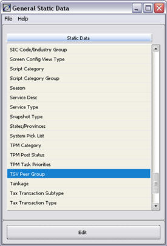
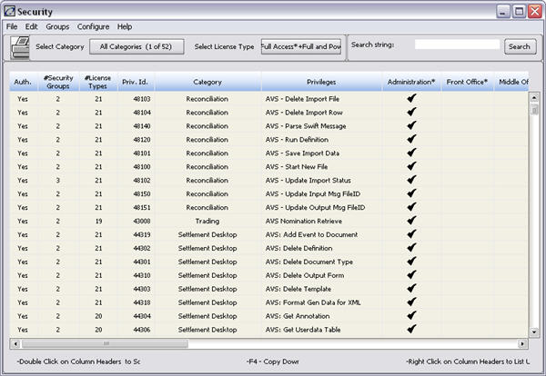
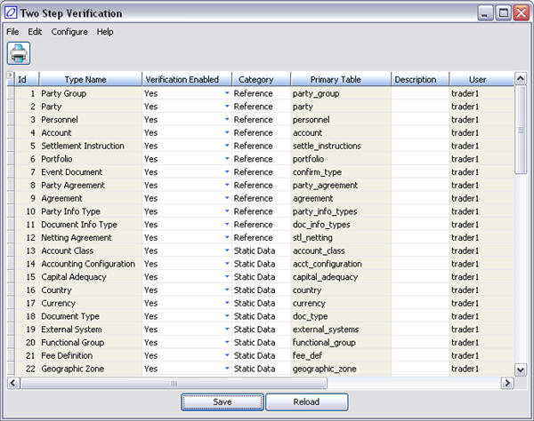
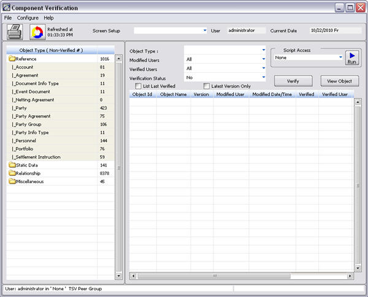
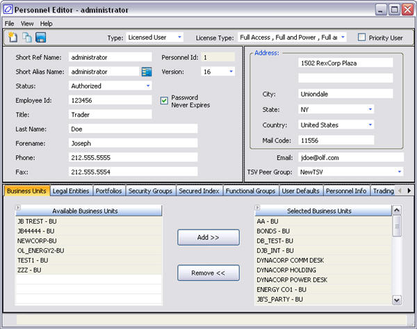

Currently, in the “Component Verification” module, authorized users are able to verify changes to static data/relationship objects.
If the user has security privilege 24102 “Same User Verify”, that user can both amend an object and verify it, otherwise another individual must verify any amendments made by the first.
The above is based on an individual user basis. The TSV (Two Step Verification) Peer Group enhancement expands this concept to a group basis, enforcing verification of an object by users NOT in the same peer group as the person who amended the object. Note that this will also allow users not in a peer group (but with privileges 24100 “View Component Verification” and 24101 “Verify Object”) to verify changes done by a user in a peer group. A person can only belong in one peer group.
Two Step Verification enables users to verify other users’ changes to data. TSV Peer Groups enforce the verification of data changes by users not in the same peer group as the person who amended the data.
Note: Security privilege 22043 Save TSV Peer Group is required to set up new TSV Peer Groups.
1. In the Admin Manager select Static Data – TSV Peer Group:

2. The TSV Peer Group window will open:
3. Click Add Row and type in a new group name (e.g. TSV peer group F).
4. Click Save to save the changes.
1. Select the Admin Manager Compliance tab.
2. Click the Security Groups icon. The following window displays:

3. Select the following security privileges for the group that is to have TSV functionality enabled. For that functionality to work, the System requires a security group to have the following privileges selected:
|
Security Privilege |
Description |
|
22038 Save Two Step Verification |
This security privilege is necessary for the user(s) who will access Static Data to choose the fields that require two-step verification. |
|
24100 View Component Verification |
Allows the user to view the component verification screen from Admin or Reference Manager (V10.2.1 and earlier). The user will view what fields were modified but cannot “verify” unless the user has the appropriate privilege listed below. |
|
24101 Verify Object |
Allows the user to verify the object that was modified, through the Component Verification window. Note: The same person cannot modify and validate the same object unless given the privilege below. |
|
24102 Same User Verification |
Allows the same user to modify and verify the change. |
|
24103 View Different Versions. |
Allows the user to view objects that were modified as well as previous versions, through the Component Verification window and in the Reference Manager (V10.2.1 and earlier). |
4. Next, set up the Two Step Verification functionality. In the Admin Manager click the General Administration tab. Click the Static Data - Two Step Verification. The following screen displays:

5. Ensure Verification Enabled is set to Yes for all data types for which you wish to enforce verification (e.g. Party) These objects will now have an audit trail of changes in the object_verification table.
6. Click Save to save the changes.
7. In Admin Manager, select the Compliance tab.
8. Click the Component Verification icon.
9. The following window displays:

10. Under the Configure/Configure tab the client can modify the order of the columns in the main window. In the left column (Object Type Non-Verified #) on the left panel, there are 4 categories of verification (Reference, Static Data. If an object has been modified, then a number will appear instead of 0 in the far right column. The number will indicate the number of times the objects have been modified since verification was enabled for that item and how may items need to be validated.
|
Description |
|
|
Reference |
The data in this group of objects are related to internal structure configured in the Reference Explorer Desktop (V10.0r2 and later) or the Reference Manager (V10.2.1 and earlier). This includes changes made to counterparties, portfolios and users. |
|
Static Data |
Static data changes needing validation will be shown in this group. |
|
Relationship |
Data in this group are most often linkages or privileges that are added or changed in Reference Explorer Desktop (V10.0r2 and later), the Reference Manager (V10.2.1 and earlier) or Admin Manger. Examples include granting of security privileges and user access to portfolios and accounts. |
|
Miscellaneous |
This is a miscellaneous area that lists the data that needs to be validated. |
To assign personnel to a TSV Peer Group, perform the following steps:
1. Navigate to Reference Explorer Personnel (V10.0r2 and later) or Reference Personnel Listing (V10.2.1 and earlier).
2. Highlight the required row and click Edit. The Personnel Editor window will open:

3. Right-click in the “TSV Peer Group” field and select the required group from the pick list.
4. Select File à Save from the menu bar to save the changes.
When changes have been made (e.g. to business units in the Reference Explorer Desktop/Reference Manager), open the Component Verification window.
1. . From the Admin Manager, click on the Compliance tab and click the Component Verification icon.
2. From the Component Verification window, in the Object Type column on the left of the Component Verification window select the data to be reviewed (e.g., Reference à Party to view changes to business units).
3. On the right hand part of the screen locate the item that has been changed and highlight the row.
4. Click the Verify button. Respond OK to the message “You will verify….with Version = x”.
1. Select two users, User1 and User2
2. In the Reference Explorer Desktop or Reference Manager, assign User1 to TSV Peer Group A and User2 to TSV Peer Group B.
3. Save the changes.
4. Still in the Reference Explorer Desktop/Reference Manager, check which Security Group each is assigned to.
5. In the Admin Manager ensure that the Security Group(s) of User1 and User 2 have the following privileges:
|
Number |
Security Privilege |
Status |
|
24100 |
View Component Verification |
Switched on |
|
24101 |
Verify Object |
Switched on |
|
24102 |
Same User Verify |
Switched off |
6. Log on as User1.
7. In the Reference Explorer Desktop/Reference Manager modify the address in a business unit and save the changes.
8. Open the Component Verification window.
9. In the Object Type column on the left select Reference à Party to view business units, legal entities and groups which have been changed.
10.In the right hand part of the screen locate the business unit which has been changed and highlight the row.
11.Click the Verify button. An error message will appear.
12.Now log on as User2 and repeat steps 5 – 9. The verification will succeed.